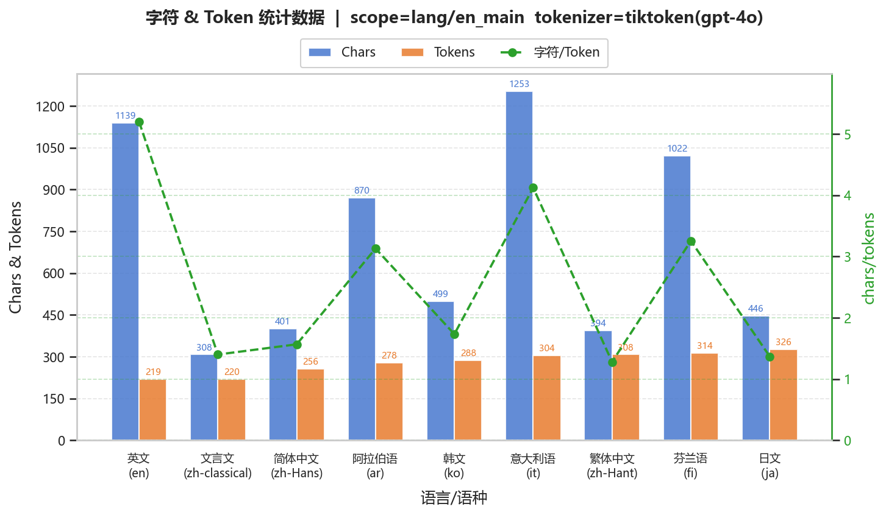
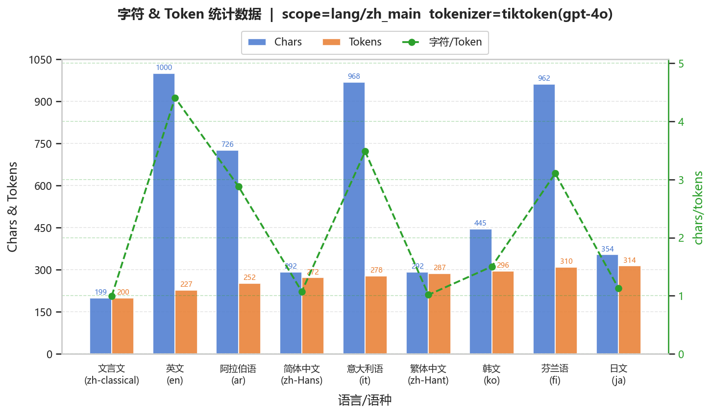
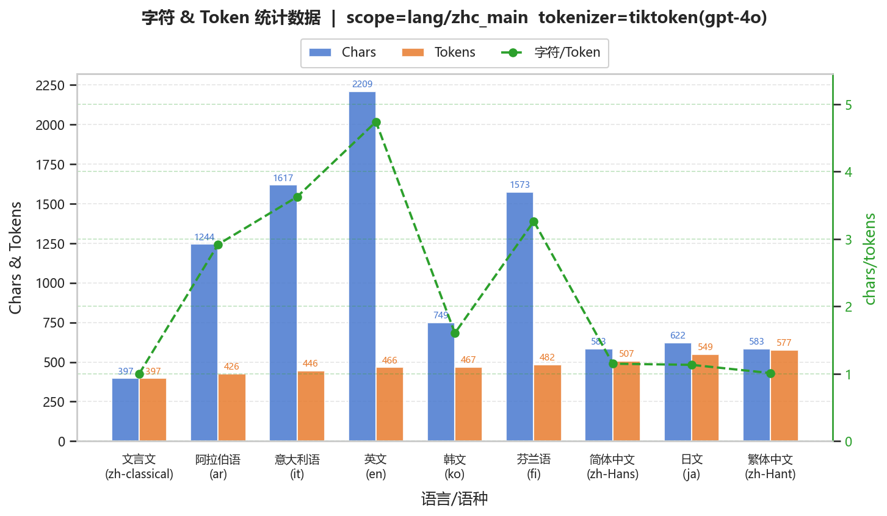
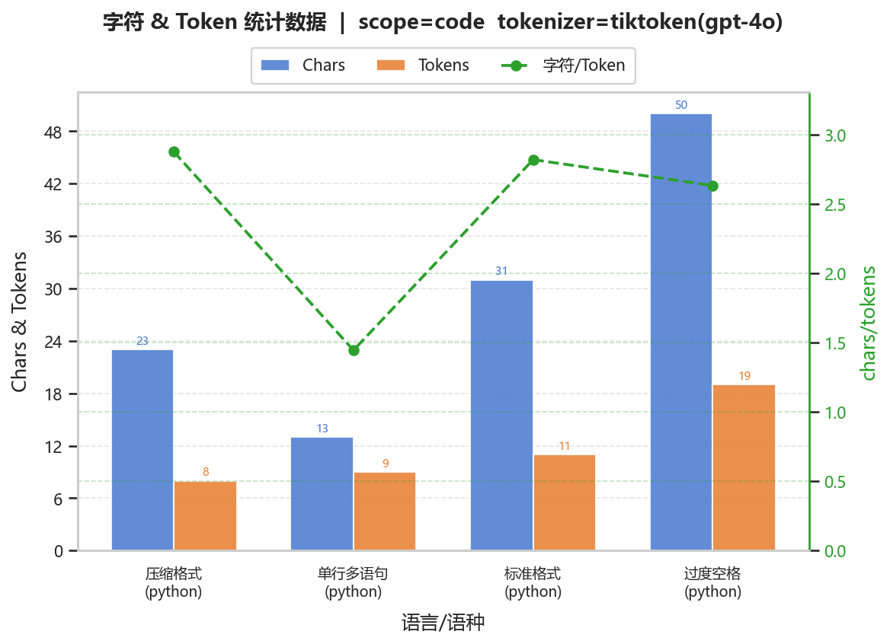
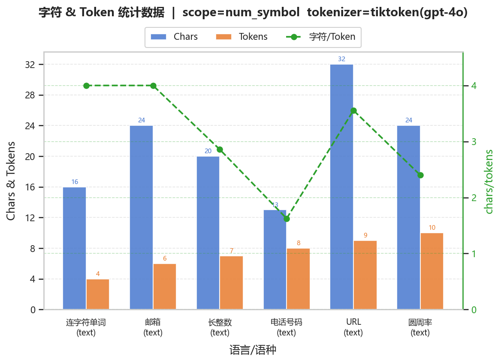
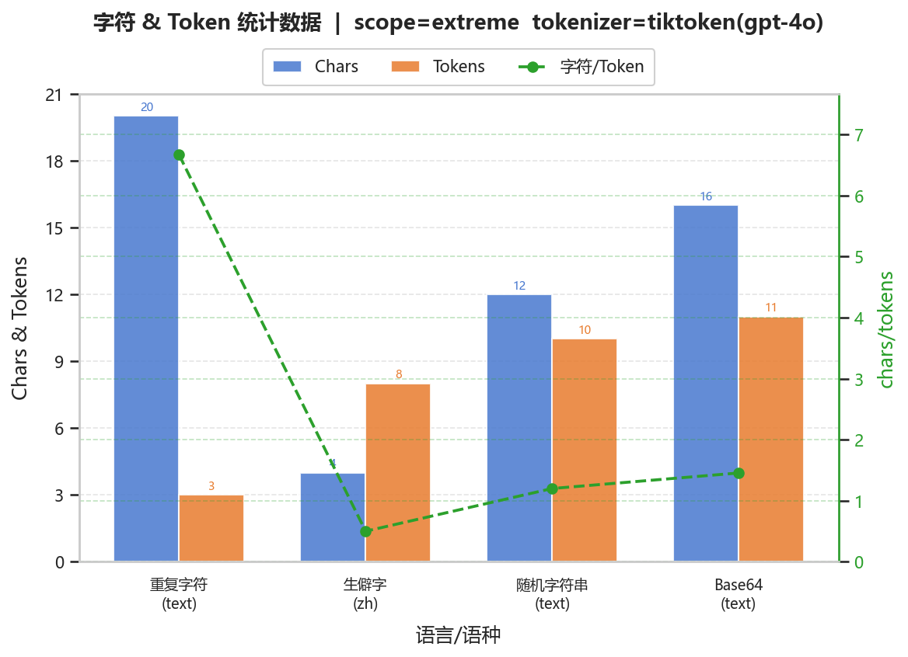
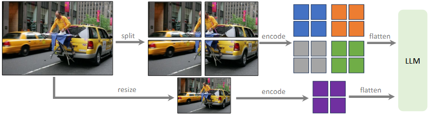

SleepCloud
0 说明1 多语言1.1 例子1.2 统计1.3 分析1.4 总表1.5 结论2 其他文本内容2.1 代码与格式2.1.1 分词示例2.1.2 汇总图表2.1.3 讨论分析2.2 数字与符号2.2.1 分词示例2.2.2 汇总图表2.2.3 讨论分析2.3 极端情况2.3.1 分词示例2.3.2 汇总图表2.3.3 讨论分析2.4 表情包2.4.1 分词示例2.4.2 讨论分析3 其他模态3.1 图片3.1.1 示例3.1.2 原理3.1.3 代表模型的视觉接入3.2 PDF3.2.1 示例3.2.2 原理3.3 其他模态A 附录A.1 代码说明A.2 日月前事的分词
本文是模式识别的一次小作业，凑合着看吧。
任务：尝试 https://tiktokenizer.vercel.app/、https://aistudio.google.com/ 等网站，观察和分析目前大语言模型中的tokenizer、tokens计算方式
提示：分析多语言差异（语言、语种）、代码与格式、数字与符号、极端情况与Emoji。例如输入一段相同含义的英文和中文，观察两者的 Token 数量差异；输入一段包含大量空格、缩进的 Python 代码，对比压缩空格前后的 Token 数量；输入长串数字（如手机号、圆周率）、带有连字符的单词或邮箱地址，观察它们是如何被切分的；测试生僻字、网络流行语或者一长串 Emoji 表情，看看 Token 是如何分配的。文本格式之外的文件呢？例如图片和pdf文件（Qwen-VL系列、InternVL系列、MiMo-VL、DeepSeek-VL等）？
下例由代码生成，见 Understanding Tokenization in LLMs。
【日月前事】
【鸽子衔枝之年】
天上永恒的王座到来，世界为之焕然一新。
然后真王，原初的那一位开始和旧世界的主人们，七位恐怖大王开战。
那恐怖的大王们是龙。
原初的那一位造出了自己发着光的影子。
而影子的数量是四。
【法涅斯，或者原初的那一位】
原初的那一位，或许是法涅斯。
它生着羽翼，头戴王冠，从蛋中出生，难以分辨雌雄。
但是世界如果要被创造，蛋壳必须被打破。
法涅斯——原初的那一位——却用蛋壳隔绝了「宇宙」和「世界的缩影」。
【衔枝后四十余年】
四十个冬天埋葬了火，四十个夏天沸腾了海。
七位大王全部被打败，七个王国全部对天上俯首称臣。
原初的那一位大王开始了天地的创造。
为了「我们」——它最可怜的人儿将出现在这片大地。
…………
注：若使用 .md 或 .html 打开，鼠标悬浮在字符上会显示对应的 token（一个字符可能会对应多个 tokens，例如 “鸽”）。
使用示例见
code/data/lang/<sub_type>/001.json。
（1）英文

使用《Attention is All You Need》摘要。
（2）中文

使用原神《日月前事》节选。
（3）文言文

使用《桃花源记》。
（1）整体规律
字符密度高语言（中文、日文）：token数≈字符数（char/token≈1–1.5）
词边界明确语言（英文、意大利语）：token数显著更少（char/token≈3–5）
形态复杂语言（芬兰语、阿拉伯语）：处于中间区间（≈3左右）
该分布在不同语料中保持一致，说明差异主要由语言结构决定
（2）中英对比
对比
英文：char/token≈4–5，一个token对应多个字符
中文：char/token≈1–1.5，接近“一字一token”
差异来源：
英文：BPE子词分词，高频词与词缀可合并
中文：缺乏显式词边界，分词退化为字级或近字级
（3）文言文
char/token≈1.0，几乎完全一一对应
词汇极短，组合空间有限
语料覆盖弱，缺乏稳定子词单元
几乎不存在可压缩结构
（4）跨预料一致性
英文始终最高压缩率（≈4–5）
中文系语言稳定低压缩（≈1–1.5）
芬兰语、阿拉伯语稳定中等（≈3）
表明token分布主要由语言统计结构而非具体文本内容决定
（5）token 级可视化观察
中文：
多数汉字对应单token
少量生僻字或低频字被拆分
高频词（如“世界”）可能整体合并
英文：单词被拆为子词（如 Primordial → Prim + ordial）
结论：基本单位为“统计子串”，而非语言学意义上的词或字
| 语言 | char/token（典型） | 分词粒度特征 | 结构特点 | 压缩效率 | 主要原因 |
|---|---|---|---|---|---|
| 英文 | ≈ 4–5 | 子词级（subword） | 明确空格分词 | 高 | 高频词与词缀可合并（BPE有效） |
| 简体中文 | ≈ 1.0–1.5 | 字级 / 近字级 | 无显式词边界 | 低 | 分词退化为单字，合并空间有限 |
| 繁体中文 | ≈ 1.0–1.3 | 字级 / 更细粒度 | 字形更分散 | 更低 | 语料频率更分散，合并更困难 |
| 文言文 | ≈ 1.0 | 几乎完全字级 | 高度压缩语义表达 | 极低 | 短词+低频组合，几乎不可合并 |
| 日文 | ≈ 1.1–1.4 | 混合（汉字+假名） | 部分有词边界信息 | 低 | 假名提供一定结构，但仍接近字级 |
| 韩文 | ≈ 1.5–1.8 | 音节块级（syllable） | 黏着语，形态变化明显 | 中低 | 词形变化导致子词难稳定复用 |
| 意大利语 | ≈ 3–4 | 子词级 | 屈折语 | 中高 | 词形变化存在，但词干稳定 |
| 芬兰语 | ≈ 3 | 子词级 | 强黏着语 | 中 | 长词+复杂形态，拆分较多 |
| 阿拉伯语 | ≈ 2.8–3.2 | 子词级 | 词根-词形结构 | 中 | 词形变化复杂但存在模式性 |
（1）tokenization 的本质与影响
token ≠ 字符 ≠ 词，而是频率驱动的编码单元
语言结构决定压缩效率：
空格分词语言 → 高压缩
表意文字 → 低压缩
低资源文本（如文言文）→ 几乎不可压缩
成本影响：相同语义下，中文token数≈英文的1.2–1.5倍
（2）启示
一般认为中文比英文简洁凝练，这在“篇幅”或者“字符数”上是正确的，然而分词时中文占劣势，不如英文。
文言文比简体中文白话文简洁凝练，然而需要注意一个字符可能对应多个 tokens，尽管如此，在测试环境中，文言文 tokens 比白话文少，然而这不意味着文言文更佳，现代场景下用文言文，可能会带来语义的偏差，并增大理解的难度，对 LLM 可能不如语料更丰富的白话文效果好。
一般用原生语言撰写再翻译到其他语言，原生语言的 tokens 会略有优势。
（1）标准格式
chars = 31, tokens = 11, chars/tokens = 2.82
def add(a, b):
return a + b
（2）压缩格式
chars = 23, tokens = 8, chars/tokens = 2.88
def add(a,b):return a+b
（3）过度空格
chars = 50, tokens = 19, chars/tokens = 2.63
def add( a, b ):
return a + b
注：原始内容为
1def add( a, b ):2return a + b使用 HTML 标签进行渲染，多余的空格会自动略去。仅适合看颜色区分不同 tokens，不适合看长度。
（4）单行多语句
chars = 13, tokens = 9, chars/tokens = 1.44
a=1;b=2;c=a+b

| variant_id | language | char_count | token_count | char_per_token | token_per_char |
|---|---|---|---|---|---|
| 标准格式 | python | 31 | 11 | 2.81818 | 0.354839 |
| 压缩格式 | python | 23 | 8 | 2.875 | 0.347826 |
| 过度空格 | python | 50 | 19 | 2.63158 | 0.38 |
| 单行多语句 | python | 13 | 9 | 1.44444 | 0.692308 |
（1）代码与格式对 tokenization 的影响
空格、换行、缩进均可能被编码为独立 token，增加序列长度
合理压缩格式（去除冗余空格、合并简单表达式）可减少 token 数，但收益有限（≈10–30%）
过度空格显著增加 token 数，且不带来语义增益。超过三个空格，一般不会进一步增加 tokens。
分号、运算符等符号在特定上下文中可能与相邻字符合并，体现 tokenizer 的上下文敏感性
（2）结构化表达与线性表达的差异
多语句线性拼接（如 a=1;b=2）token 密度显著上升（chars/token下降）
说明 tokenizer 对“结构清晰但符号密集”的表达压缩能力较弱
代码中语义单位（变量、操作符）往往被拆分，难以形成稳定子词
（3）token级行为特征
token 切分不严格对齐语法结构，而是依赖统计子串
常见模式（如 return、+b）可能形成整体 token
低频或被打断的模式（如多空格、分散符号）倾向被拆分
（4）效率与可读性的权衡
极端压缩（单行、多符号）虽可减少字符数，但未必降低 token 数
标准格式在可读性与 token 成本之间提供较优平衡
token 最优形式不等同于人类可读性最优形式
启示
tokenizer 对“自然语言结构”与“代码结构”的处理机制存在差异：
自然语言依赖子词复用
代码更接近符号序列，压缩空间有限
编写代码或提示词时：
避免无意义空格与冗余格式
不必过度压缩结构（收益有限且损害可读性）
在 token 预算敏感场景（如 prompt 设计）中，应优先优化语义冗余，而非单纯压缩格式
（1）URL
chars = 32, tokens = 9, chars/tokens = 3.56
https://example.com/path?query=1
（2）电话号码
chars = 13, tokens = 8, chars/tokens = 1.62
+65-9123-4567
（3）连字符单词
chars = 16, tokens = 4, chars/tokens = 4.00
state-of-the-art
（4）邮箱
chars = 24, tokens = 6, chars/tokens = 4.00
test.email-123@gmail.com
（5）圆周率
chars = 24, tokens = 10, chars/tokens = 2.40
3.1415926535897932384626
（6）长整数
chars = 20, tokens = 7, chars/tokens = 2.86
12345678901234567890

| variant_id | char_count | token_count | char_per_token | token_per_char |
|---|---|---|---|---|
| 长整数 | 20 | 7 | 2.85714 | 0.35 |
| 圆周率 | 24 | 10 | 2.4 | 0.416667 |
| 电话号码 | 13 | 8 | 1.625 | 0.615385 |
| 邮箱 | 24 | 6 | 4 | 0.25 |
| URL | 32 | 9 | 3.55556 | 0.28125 |
| 连字符单词 | 16 | 4 | 4 | 0.25 |
（1）数字与符号的分词特征
tokenizer 对数字与符号主要进行模式驱动切分，而非语义建模
常见数字片段（如“123”“456”）可形成稳定子词，但整体数字串通常被拆分
标点（.、-、@、? 等）多作为独立 token 或与邻近字符局部合并
（2）结构化字符串的局部可压缩性
URL、邮箱等具有固定结构的文本表现出较高压缩率（chars/token≈3–4）
原因：
高频模式（如 https://、.com、@gmail）被整体编码
语法结构稳定，有利于子词复用
说明 tokenizer 对“规则化字符串”具有一定优化能力
（3）非结构化数字序列的低效率
电话号码、圆周率等序列 token 数较高（chars/token≈1.5–2.5）
数字被拆分为不等长片段（如“912”“3”）
原因：
缺乏语义与结构模式
难以形成高频可复用子串
（4）符号对分词的影响
连字符（-）在不同上下文表现不同：
英文词中（state-of-the-art）可与词片段合并
数字或编号中（电话）多为独立 token
分词结果高度依赖上下文统计，而非符号本身
（5）token级行为特征
tokenizer 倾向于捕获高频子串模式（如三位数字分组）
同一类型字符串中，切分粒度不均（长度不固定）
表明分词过程本质为统计压缩，而非规则解析
（6）效率与表达形式的关系
结构清晰（URL、邮箱）→ token 更少
纯序列（随机数字、常数）→ token 更多
字符数相近时，结构性差异可导致 token 数显著变化
启示
tokenizer 对“格式化文本”存在隐式优化，对“无结构序列”表现较弱
在 token 受限场景：
可利用结构化表达（如标准URL、规范格式）降低 token 成本
避免冗长无模式数字或随机字符串
数字与符号的分词行为进一步说明：
token 单位来源于统计频率，而非语义或语法规则
（1）Base64
chars = 16, tokens = 11, chars/tokens = 1.45
SGVsbG8gd29ybGQ=
（2）生僻字
chars = 4, tokens = 8, chars/tokens = 0.50
龘靐齉齾
（3）随机字符串
chars = 12, tokens = 10, chars/tokens = 1.20
x9Q#@!asD12z
（4）重复字符
chars = 20, tokens = 3, chars/tokens = 6.67
aaaaaaaaaaaaaaaaaaaa

| variant_id | language | char_count | token_count | char_per_token | token_per_char |
|---|---|---|---|---|---|
| 生僻字 | zh | 4 | 8 | 0.5 | 2 |
| 重复字符 | text | 20 | 3 | 6.66667 | 0.15 |
| 随机字符串 | text | 12 | 10 | 1.2 | 0.833333 |
| Base64 | text | 16 | 11 | 1.45455 | 0.6875 |
（1）极端输入的分词退化行为
Base64、随机字符串等缺乏语义与结构的信息，token 切分趋近字符级或短片段级（chars/token≈1–1.5）
表明 tokenizer 在无统计模式时退化为近似“字节/字符编码”
（2）低频字符的异常开销
生僻字出现“一个字符对应多个 token”（chars/token<1）
原因：
训练语料覆盖不足
无法形成稳定子词单元
属于典型的 OOV（out-of-vocabulary）近似行为
（3）高重复模式的压缩效应
重复字符（如 aaaa...）被高效合并（chars/token显著增大）
说明 tokenizer 对高频连续模式具有强压缩能力
（4）核心结论
tokenizer 本质是基于频率的统计压缩器：
有模式 → 高压缩
无模式 → 低压缩
低频 → 甚至“反压缩”（一个字符对应多个 token）
启示
极端或非自然文本（编码串、随机串）会显著增加 token 成本
生僻字符在 token 预算与模型理解上均存在潜在劣势
tokenization 的性能上限取决于训练语料的分布，而非规则设计
（1）单个表情
chars = 1, tokens = 1, chars/tokens = 1.00
😀
（2）连续表情
chars = 10, tokens = 15, chars/tokens = 0.67
😀😃😄😁😆😅😂🤣🥲😊
（3）文本 + 表情
chars = 15, tokens = 4, chars/tokens = 3.75
hello 😀 world 😂
（4）重复表情
chars = 7, tokens = 7, chars/tokens = 1.00
😂😂😂😂😂😂😂
（1）Emoji 的分词不稳定性
单个表情可能对应1个或多个 token（取决于是否存在高频编码）
连续表情中，部分表情被拆分，导致 chars/token < 1
（2）上下文与模式影响显著
重复表情可被稳定编码（1 emoji ≈ 1 token），如果是纯文本，重复字符往往被合并为一个 token。
混合文本（如“hello 😀”）中，表情可能与空格或词合并为单 token
（3）编码层面的差异
字符串中加入 Emoji，会使整段文本从“单字节编码”升级为“多字节编码”，因此所有字符的存储成本同时增加，开销增加主要来自整体编码宽度变化，而非 Emoji 本身。
tokenization 中，Emoji 只影响自身对应的 token，不会改变其他文本的表示方式或成本
例子：
xxxxxxxxxx81>>> getsizeof('')2413>>> getsizeof('Hello world!')4535>>> getsizeof('😀')6647>>> getsizeof('Hello world!😀')8112而 2.4.1（3）中可见不会额外增加 tokens。
使用 Google AI Studio，其算法未开源，仅能尝试+观察。
使用同一张图的不同缩放倍率：
x1：1446x524（1101 tokens）
x0.5：723x262（1101 tokens）
x1.5：2169x786（1101 tokens）
x0.1：145x53（1101 tokens）
x10：14460x5240（1101 tokens）
x0.05：72x26（1101 tokens）
由此可以认为图像分辨率不会影响 Google AI Studio 的输入 tokens。因此使用这类工具时，可以借鉴 LLaVA 1.5 的思路，大的图像可以裁剪后分别输入以提供局部信息，再整体缩放后输入以提供全局信息。
图像 → 视觉编码器（ViT 等） → 视觉特征 → 适配器（projector / connector） → 映射至语言嵌入空间 → 与文本 token 一同输入 LLM。
有一些变体，下图是 LLaVA1.5 的方案。

| 模型 | 时间 | 视觉接入方式 | 高分辨率/多图策略 | 这一代的代表意义 |
|---|---|---|---|---|
| LLaVA-1.5 | 2023 | CLIP 类视觉编码器 + MLP projector + LLM | 以固定分辨率为主 | 奠定“视觉编码器 + projector + LLM”的开源主路线 |
| LLaVA-NeXT / OneVision | 2024 | 延续 LLaVA 框架 | 统一单图、多图、视频；强调跨场景迁移 | 从“单图理解”走向统一视觉场景建模 (arXiv) |
| Qwen2-VL | 2024 | 视觉编码器 + 连接器 + LLM | Naive Dynamic Resolution；M-RoPE；支持任意分辨率 | 动态分辨率成为主流公开方案之一 (arXiv) |
| Qwen2.5-VL | 2025 | 延续 Qwen2-VL 路线 | 更强定位、文档解析、长视频 | 动态分辨率路线继续强化到“定位/文档/视频”任务 (arXiv) |
| InternVL 2.5 | 2024 | 视觉编码器 + 语言模型 + 视觉压缩/缩放设计 | 高分辨率处理、测试时缩放、视觉/语言共同扩展 | 代表“高分辨率 + 开源高性能”路线 (arXiv) |
| DeepSeek-VL2 | 2024 | 视觉编码器 + VL adaptor + MoE LLM | dynamic tiling 处理高分辨率；语言侧引入 MoE | 代表“视觉动态切分 + 语言侧 MoE”路线 (arXiv) |
| Molmo | 2024 | 视觉编码器 + connector + LLM | 侧重开放数据与可复现训练 | 代表“开放数据、开放训练配方”的研究路线 (arXiv) |
| MiMo-VL | 2025 | ViT + projector + LLM | 使用 Qwen2.5-ViT，支持 native resolution 输入 | 代表“在成熟动态分辨率视觉骨干上强化推理与 GUI/grounding”路线 (arXiv) |
| Llama 3.2 Vision | 2024 | Meta 的开源视觉 LLM 路线 | 官方强调视觉识别、推理与边缘部署 | 代表主流大模型厂商把视觉能力纳入通用 LLM 家族 (Meta AI) |
| Gemini（AI Studio 可观察对象） | 2025–2026 | 细节未公开 | 官方公开 media_resolution，可直接控制视觉 token 预算 | 代表闭源商用模型把“视觉 token 预算”做成显式接口 (Google AI for Developers) |
以《日月前事》为例
存在 .md 里导出 PDF：1121 tokens。
直接发送文本：768 tokens。
如果 PDF 里除了文本，还存在图片，一般会对图片使用视觉模型得到 tokens。
做 RAG 也是如此（主流方案是嵌入 + 重排 + 视觉，其中重排和视觉可选）。
普通文本
直接解析为字符串 → 文本 tokenizer
成本最低、最稳定
表格
结构解析为行列（HTML / Markdown / JSON）→ 文本 token
或直接当作图像 → visual tokens（复杂表格更常见）
公式
OCR/解析为 LaTeX / MathML → 文本 token
若解析困难 → 作为图像区域处理
图片 / 图表
直接走视觉路径 → visual tokens
与普通图像输入一致
代码块
若可提取 → 作为文本（类似代码 tokenizer 行为）
若嵌入为图片 → 走视觉路径
统一视角（跨模态）
所有模态本质流程一致：原始信号 → 专用编码器 → 表示（tokens / embeddings） → LLM。
差异在于：如何离散化（token 数量如何控制）；信息是空间、时间还是频率结构。
（1）视频
处理方式
视频 → 抽帧（sampling） → 图像序列 → 视觉编码 → visual tokens
或直接用视频编码器（建模时间维度）
关键特点
token 数 ≈ 帧数 × 每帧视觉 token
需控制时间维（采样率）与空间维（分辨率）
结论
本质是“多帧图像 + 时间建模”
（2）音频
处理方式
音频 → 声学特征（mel spectrogram / codec） → audio tokens
或：音频 → ASR → 文本 → text tokens
两条路径
语音识别路径（text-first）：成本低，丢失声学细节
声学建模路径（audio tokens）：保留音色、语调
结论
音频 token 是对连续时间信号的离散化表示
（3）其他模态
3D / 点云：空间采样 → 点/体素 → tokens
传感器数据：时间序列 → embedding → tokens
| 模态 | 原始结构 | token 数主要由什么决定 |
|---|---|---|
| 文本 | 离散符号 | 语言结构 |
| 图像 | 空间二维 | 分辨率 |
| 视频 | 空间 + 时间 | 分辨率 × 帧数 |
| 音频 | 时间连续 | 采样率 / 压缩方式 |
| 混合结构 | 解析路径 |
见附件 code 文件夹。
功能概览：
| 功能 | 说明 |
|---|---|
| 多语言统计 | 遍历 data/ 下所有样例，计算字符数、token 数及比率 |
| 格式化导出 | JSON / CSV（utf-8-sig）/ Markdown 表格 |
| 学术图表 | 分组柱状图 + 双纵轴折线，按 token 数升序排列 |
| 词元着色 MD | 每个变体独立 .md，HTML <span> 对每个可解码片段着色，鼠标悬停显示 token ID |
| 任意层级目录 | data/ 支持单层（code/001.json）与多层（lang/en_main/001.json）混用 |
| 子任务过滤 | --subpath lang/en_main 只处理指定路径，输出自动镜像 |
项目结构：
xxxxxxxxxx411PR-exp3/2├── data/ # 测试数据（可任意嵌套）3│ ├── code/ # 代码片段4│ │ └── 001.json5│ ├── emoji/ # Emoji / 特殊字符6│ │ └── 001.json7│ ├── extreme/ # 极端边界情况8│ │ └── 001.json9│ ├── format/ # 格式差异10│ │ └── 001.json11│ ├── lang/ # 多语言对比（两层结构）12│ │ ├── en_main/13│ │ │ └── 001.json # Transformer 论文摘要（9 语言）14│ │ ├── zh_main/15│ │ │ └── 001.json16│ │ └── zhc_main/17│ │ └── 001.json18│ └── num_symbol/ # 数字 / 符号19│ └── 001.json20│21├── src/22│ ├── schema.py # 数据模型（Case / Variant dataclass）+ 字段校验23│ ├── loader.py # 递归扫描 data/，支持 subpath 过滤24│ ├── tokenizer.py # BaseTokenizer 接口 + TiktokenTokenizer 实现25│ ├── metrics.py # 指标计算（char / token / ratio，除零安全）26│ ├── exporter.py # 导出 JSON / CSV / Markdown27│ ├── plotter.py # 学术图表（matplotlib + seaborn，支持 CJK 字体）28│ ├── variant_exporter.py # 词元着色 Markdown 可视化29│ └── colors.json # 20 色循环配色表30│31├── scripts/32| ├── demo.bat # 使用 text 和 text_path 参数调用 main.py的示例33│ ├── lang.bat # 批量运行 lang/ 下三个子任务34│ └── run_all.bat # 批量运行全部 8 个子任务35│36├── tests/37│ └── test_metrics.py # 单元测试（27 个）38│39├── main.py # CLI 入口（6 步流水线）40├── requirements.txt41└── README.md
代码量：
x1scripts: 02src: 11153exporter.py: 1594loader.py: 895metrics.py: 1326plotter.py: 2317schema.py: 1208tokenizer.py: 1889variant_exporter.py: 19510__init__.py: 111tests: 35712test_metrics.py: 35613__init__.py: 114main.py: 30215Total 1774 lines / 58.925 kb = 30.106 lines/kb
【日月前事】
【鸽子衔枝之年】
天上永恒的王座到来，世界为之焕然一新。
然后真王，原初的那一位开始和旧世界的主人们，七位恐怖大王开战。
那恐怖的大王们是龙。
原初的那一位造出了自己发着光的影子。
而影子的数量是四。
【法涅斯，或者原初的那一位】
原初的那一位，或许是法涅斯。
它生着羽翼，头戴王冠，从蛋中出生，难以分辨雌雄。
但是世界如果要被创造，蛋壳必须被打破。
法涅斯——原初的那一位——却用蛋壳隔绝了「宇宙」和「世界的缩影」。
【衔枝后四十余年】
四十个冬天埋葬了火，四十个夏天沸腾了海。
七位大王全部被打败，七个王国全部对天上俯首称臣。
原初的那一位大王开始了天地的创造。
为了「我们」——它最可怜的人儿将出现在这片大地。
…………
【衔枝的四百余年】
山川与河流落成，大海和大洋接纳了反叛者和不从者。
原初的那一位和一位影子制造出了飞鸟、走兽和水鱼。
它们还一起制造出了花草和树木。最后它们造出了人。
我们的先祖的数目不可知晓。
自此时起，我们先祖和原初的那一位立约。
纪年也更迭一新。
【箱舟开门之年】
原初的那一位对人有一套神圣的规划。
人只要幸福，它便欢欣。
【箱舟开门的次年】
人们耕耘，第一次收获。
人们开掘，第一次收获贵金。
人们聚集，第一次写就诗歌。
【狂欢节之年】
如果有饥馑，天上就落下食物与甘霖。
如果有贫瘠，那大地就会生出矿藏。
如果有忧郁蔓延，那么高天就会以声音回应。
唯一的禁止之事，就是输给诱惑。但是诱惑的通道已经被封堵。
…………
【葬火之年】
天上的第二个王座到来，仿佛创世之初的大战再开。
那一天，天也倾颓，地也崩裂。
我们海渊之民的先祖，和他们世代栖居的土地，落入了此处。
黑暗的年代由此开始。
【黑暗的元年】
七位大王的子民被海接纳，深海的龙嗣曾经统治这里。
我们的先祖与它们发生了征战。
先祖使用千灯将它们逐入影子，它们则在影子里狩猎人类。
此处唯有黑暗，所以无处不是它们的猎场。
人们的祈祷汇成哀歌，原初的那一位和其他三位发光的影子并不能听见。
【太阳的比喻】
黑暗的洞窟里，有一群未曾见过光的人们在生活。
有一位见过太阳的贤人，对着洞窟的众人描绘着光之下的生活与太阳的伟大。
他见众人无法理解，于是点起了火。
人们于是开始崇拜火，以为这个是太阳，甚至开始习惯了黑暗与火光的生活。
贤人死后，有人霸占了火，通过火，投下了自己巨大的影子。
统计数据：chars = 1007, tokens = 867, chars/tokens = 1.16。